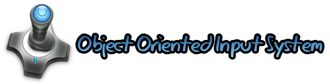

Extenso tutorial de OIS en IberOgre
Sep 11, 2010 · CommentsGames development

Tras algunas semanas sin anunciar ninguna novedad en IberOgre traigo buenas noticias. Para empezar, he eliminado parte de la incertidumbre inicial y planificado los próximos artículos. Además, mi compañero, Alberto Cejas, va a comenzar a colaborar en la wiki. Sé que las palabras no valen por sí solas y por ello ya está publicado un nuevo artículo en la wiki de Ogre3D en español: “Manejo básico de OIS” catalogado en la sección “Otras tecnologías”.
OIS (Object Oriented Input System) es una biblioteca multiplataforma (Windows, GNU/Linux y Mac) open source (licencia zlib/libpng) para la gestión de eventos y dispositivos de entrada. Ogre3D no es un motor de videojuegos en 3D, simplemente es un engine de renderizado por lo que componentes como sonido, red y entrada no están incluidos. Es perfectamente válido utilizar el subsistema de entrada de SDL para capturar eventos pero OIS es la librería más extendida en la comunidad de Ogre.
Entre las características de OIS destaca la orientación a objetos (¡qué sorpresa!) y la inclusión de listeners. Utilizando el patrón de diseño “Observador” ya implementado podemos crear clases capaces de ser notificadas de cambios en el estado interno del ratón, teclado o cualquier joystick conectado al equipo. Da resultados bastante buenos pero la documentación oficial es prácticamente inexistente. No existe una documentación oficial, únicamente podemos acceder al html generado por Doxygen de las clases si lo generamos nosotros mismos a partir del código. Por si fuera poco, muchas de los métodos no están completamente explicados y muchas secciones son confusas. Afortunadamente, en la wiki oficial de Ogre3D encontramos un pequeño tutorial (en inglés, obviamente).
En IberOgre se utilizará OIS como librería para capturar eventos del usuario por lo que era necesario incluir un tutorial al respecto. Creo que cubre un vacío hasta ahora complicado de salvar (aprender con escasa documentación nunca es agradable). El artículo está publicado aunque en proceso de corregir pequeños errores, si alguien detecta algún problema le agradecería que diera la voz de alarma.
Espero que os sea útil.